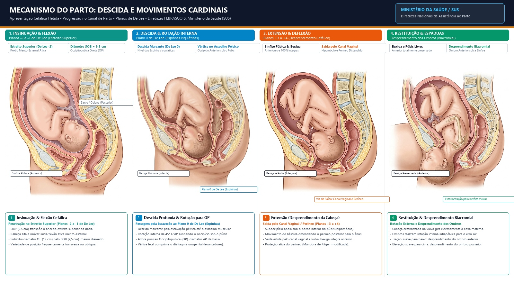
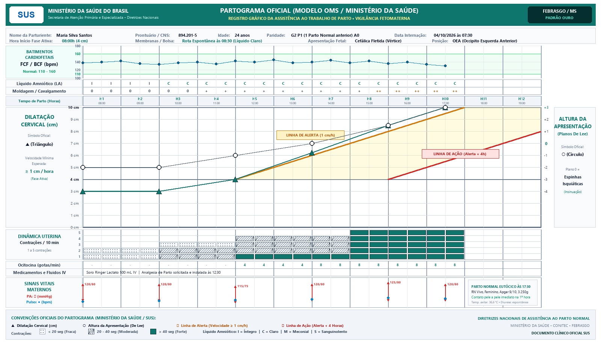

Trabalho de Parto & Os 7 Movimentos Cardinais
O trabalho de parto é como abrir uma porta pesada com mola: o útero é a mola forte que empurra o bebê contra a porta (o colo). Cada contração empurra um pouquinho, e a portinha vai abrindo devagar. Quando a porta abre totalmente (10 centímetros), o bebê faz uma dancinha mágica girando a cabeça como uma chave na fechadura até achar o caminho para sair!
Diagnóstico Diferencial: Trabalho de Parto Verdadeiro vs Falso (Braxton Hicks)
| Característica | Trabalho de Parto Verdadeiro | Falso Trabalho de Parto (Braxton Hicks) |
|---|---|---|
| Regularidade das Contrações | Regulares, com intervalos decrescentes | Irregulares, espaçadas sem padrão |
| Intensidade e Duração | Progressivamente mais intensas e duradouras | Sem progressão de força ou duração |
| Irradiação da Dor | Inicia no dorso e irradia para abdome anterior | Restrita ao abdome anterior ou baixo ventre |
| Efeito da Deambulação / Repouso | Mantém ou intensifica o padrão | Alivia com deambulação, repouso ou banho morno |
| Modificação Cervical (Colo) | SIM: Apagamento progressivo e dilatação | NÃO: Colo grosso, posterior e fechado |
Fase Latente: 0 a 6 cm (lenta, até 20h em nulíparas).
Fase Ativa: 6 a 10 cm (rápida, ≥ 1 cm/h segundo Zhang/ACOG).
Da dilatação total (10 cm) até o nascimento. Nulípara: até 3h (com peridural) ou 2h (sem). Puxos espontâneos (reflexo de Ferguson).
Expulsão da placenta (até 30 min). Baudelocque-Schultze (75% - face fetal primeiro) vs Baudelocque-Duncan (25% - face materna).
Primeira hora pós-parto. Maior risco de atonia e HPP. Vigilância do Globo de Segurança de Pinard e sinais vitais.

Sequência Rigorosa dos 7 Movimentos Cardinais (USMLE Mnemonic)
Partograma da OMS & Diagnóstico de Distocias
O partograma é como o mapa com velocímetro do parto. Ele tem duas linhas guias desenhadas na folha: a linha amarela (Alerta) e a linha vermelha (Ação). Se o barquinho do bebê navegar devagar demais e bater na linha vermelha, o médico sabe que o parto "emperrou" e precisa intervir para ajudar o bebê a nascer logo e seguro!

Curvas de Partograma em Tempo Real
Início da fase ativa em 6 cm. Progressão rápida e constante a ≥ 1 cm/h, mantendo-se à esquerda da Linha de Alerta.
Critérios Rígidos de Parada de Progressão (ACOG / USMLE Gold Standard)
Para fechar diagnóstico de falha de progressão da fase ativa (indicação de cesárea), é obrigatório preencher TODOS os seguintes requisitos prévios:
Distócia de Ombros & O Algoritmo HELPERR
A distócia de ombros é como tentar tirar uma rolha gordinha de dentro de uma garrafa: a pontinha saiu (a cabeça do bebê), mas os bracinhos ficaram travados atrás do osso duro da mamãe (sínfise púbica). O médico não pode puxar a cabeça com força para não machucar o pescocinho! Em vez disso, dobra as pernas da mamãe bem para cima (McRoberts) e aperta em cima do osso para destravar o ombrinho!

Algoritmo Mnemônico HELPERR
Chamar neonatologista, anestesista, equipe de enfermagem obstétrica e solicitar materiais cirúrgicos adicionais.
Avaliar necessidade de episiotomia ampla para dar espaço às manobras manuais internas (não resolve a distocia óssea).
1ª Manobra Obrigatória: Hiperflexão e abdução das coxas maternas contra o abdome. Retifica a curvatura sacral e alarga a pelve.
Manobra de Rubin I: Pressão no dorso do ombro anterior em sentido oblíquo para desimpactá-lo da sínfise. NUNCA fúndica!
Rubin II (pressão na face posterior do ombro anterior) ou Woods Screw (rotação do ombro posterior em saca-rolhas por 180°).
Flexionar o cotovelo e capturar a mão fetal, tracionando o braço posterior sobre o tórax fetal para fora da vagina.
Colocar a paciente em posição de quatro apoios (mãos e joelhos). A gravidade e a mudança nos diâmetros conjugados frequentemente desimpactam o ombro posterior.
Manobras Proibidas e Fatais na Distócia de Ombros:
- Manobra de Kristeller (Pressão no Fundo Uterino): Formalmente proibida! Aumenta a impactação do ombro contra o púbis e causa rotura uterina e descolamento de placenta.
- Tração excessiva na cabeça ou torção cervical: Causa estiramento do plexo braquial com paralisia permanente de Erb-Duchenne (C5-C6 - 'garçom pedindo gorjeta') ou Klumpke (C8-T1).
Hemorragia Pós-Parto (HPP) & O Algoritmo dos 4 T's
Depois que o bebê nasce, o útero precisa apertar como um punho bem fechado para fechar as torneirinhas de sangue onde a placenta estava colada. Se o útero ficar cansado e mole como uma massinha (atonia), o sangue vaza sem parar. Para salvar a mamãe, a gente dá remédios que fazem o útero ficar durinho de novo e coloca uma bexiguinha de água lá dentro (o Balão de Bakri) para tampar o sangramento por dentro!
Causa nº 1 no mundo. Útero amolecido, sem globo de Pinard pós-sobredistensão ou parto prolongado.
Laceração de colo, vagina, períneo 3º/4º grau, rotura uterina e inversão uterina aguda.
Cotilédones placentários retidos, coágulos intracavitários ou espectro do acretismo placentário.
CIVD secundária a DPP, embolia amniótica, HELLP syndrome, sepse ou uso de anticoagulantes.

Calculadora do Índice de Choque Obstétrico & Conduta
Escada Terapêutica Escalonada de Uterotônicos
20-40 UI em 1000 mL SF IV contínuo.
0,2 mg IM (se normotensa).
800 μg retal ou sublingual.
1g IV em ≤ 3h (WOMAN trial).
Puerpério Fisiológico, Involução & Lóquios
Depois que o bebê nasce, o corpo da mamãe começa a arrumar a casinha. O útero que estava gigante vai encolhendo dia após dia até caber de volta dentro da bacia. A sujeirinha que sai vai mudando de cor: primeiro vermelha como groselha (lóquios rubros), depois cor-de-rosa clarinho (serosos) e por fim branquinha como leite de coco (albos).

Vermelho-vivo com pequenos coágulos. Composto por sangue, restos deciduais e vernix esfoliado. Odor característico suave (não fétido).
Coloração rosada a acastanhada. Redução acentuada de hemácias, aumento de exsudato seroso, leucócitos e muco cervical.
Coloração esbranquiçada a amarelada. Predomínio de leucócitos, células epiteliais, colesterol e muco até a cicatrização endometrial completa.
Regras de Ouro da Contracepção no Puerpério:
Aleitamento Materno: Neuroendocrinologia & Pega Correta
Na fábrica do leite da mamãe trabalham dois ajudantes: a Prolactina é a cozinheira que faz o leite delicioso dentro das panelinhas (alvéolos). A Ocitocina é o garçom que aperta as panelinhas para espirrar o leite na boquinha do bebê! E para o bebê mamar sem dor na mamãe, ele precisa abrir a boca bem grandona como um peixinho e abocanhar a rodela escura toda (a aréola), e não só a pontinha!

Critérios da Pega Correta (Sem Dor):
- Boca bem aberta: Ângulo de abertura superior a 120°.
- Lábios evertidos: Lábio inferior voltado para fora ("boca de peixe").
- Pega assimétrica: Mais aréola visível acima do lábio superior do que abaixo.
- Queixo tocando a mama: Contato firme sem obstruir as narinas do recém-nascido.
- Bochechas arredondadas: Sem covinhas ou estalos durante a sucção.
Manejo da Mastite Puerperal:
Infecção aguda por Staphylococcus aureus. Quadro de febre, calafrios, eritema em cunha doloroso e ingurgitamento mamário.
Complicações Puerperais & Saúde Mental (EPDS)
Endometrite Pós-Cesárea
Febre ≥ 38°C a partir de 24h pós-parto, dor à palpação do corpo uterino, útero subinvoluído e lóquios purulentos/fétidos. Cesárea é o fator de risco isolado mais potente.
Síndrome de Sheehan
Consequência tardia de choque hipovolêmico grave por hemorragia pós-parto maciça. Necrose da adeno-hipófise levando a pan-hipopituitarismo crônico.
Escala de Depressão Pós-Parto de Edimburgo (EPDS)
20 Flashcards Interativos 3D
Qual é o menor diâmetro cefálico apresentado na atitude fletida de vértice?
Toque para ver a resposta →Diâmetro Suboccipitobregmático, medindo aproximadamente 9,5 cm (ponto de referência: Lambda / fontanela posterior).
Girar de volta ↺Qual é a definição atual de início da fase ativa do trabalho de parto segundo a OMS e o ACOG?
Toque para ver a resposta →6 cm de dilatação cervical (critério de Zhang, 2010; substituiu a antiga definição de 4 cm de Friedman).
Girar de volta ↺Qual é a PRIMEIRA manobra a ser realizada no diagnóstico de Distócia de Ombros?
Toque para ver a resposta →Manobra de McRoberts (hiperflexão das coxas maternas contra o abdome), associada à pressão suprapúbica (Rubin I).
Girar de volta ↺Qual uterotônico é formalmente CONTRAINDICADO em pacientes com hipertensão ou pré-eclâmpsia?
Toque para ver a resposta →Metilergometrina (Ergot), pelo risco severo de vasoconstrição periférica súbita, pico hipertensivo e AVC.
Girar de volta ↺Qual hormônio é responsável pela PRODUÇÃO láctea e qual é responsável pela EJEÇÃO do leite?
Toque para ver a resposta →Prolactina (adeno-hipófise) produz o leite nos alvéolos; Ocitocina (neuro-hipófise) contrai as células mioepiteliais e ejeta o leite.
Girar de volta ↺Qual é o esquema antibiótico parenteral de primeira escolha para Endometrite Pós-Cesárea?
Toque para ver a resposta →Clindamicina 900 mg IV de 8/8h + Gentamicina 5 mg/kg/dia IV em dose única diária (esquema padrão ouro).
Girar de volta ↺Qual é o tratamento definitivo e padrão ouro para cefaleia pós-punção dural refratária?
Toque para ver a resposta →Tampão Sanguíneo Peridural (Epidural Blood Patch): injeção de 15 a 20 mL de sangue autólogo no espaço peridural para selar a fístula liquórica.
Girar de volta ↺Qual é a diferença temporal e clínica entre Baby Blues e Depressão Pós-Parto?
Toque para ver a resposta →Baby Blues: autolimitado, dura até 14 dias (choro fácil e labilidade). Depressão: persiste > 2 semanas, tristeza profunda, anedonia e culpa (exige psicoterapia/ISRS).
Girar de volta ↺Simulado USMLE Step 2 CK / Step 3
Uma primigesta de 31 anos, com diabetes gestacional compensado na dieta, encontra-se no período expulsivo. Após esforço materno vigoroso, a cabeça fetal é desprendida, porém retrai-se firmemente de volta contra o períneo materno (sinal da tartaruga). A tração suave para baixo não obtém sucesso no desprendimento do ombro anterior. Qual é a conduta imediata mais indicada?
Uma primípara de 24 anos com 39 semanas encontra-se em trabalho de parto ativo. Há 4 horas seu exame cervical revelava 7 cm de dilatação, bolsa rota e 4 contrações em 10 minutos com intensidade forte. Um cateter de pressão intrauterina documentou 220 Unidades Montevideo de contrações durante as últimas 4 horas. O exame atual revela persistência dos mesmos 7 cm de dilatação e apresentação fetal no plano 0 de De Lee. A frequência cardíaca fetal é de 140 bpm, categoria 1. Qual é o próximo passo mais adequado?
Uma paciente de 35 anos com pré-eclâmpsia com sinais de gravidade desenvolve atonia uterina e sangramento volumoso de 900 mL após parto vaginal normal. A pressão arterial atual é de 165/105 mmHg e a frequência cardíaca é de 102 bpm. Qual dos seguintes uterotônicos é FORMALMENTE CONTRAINDICADO nesta paciente?